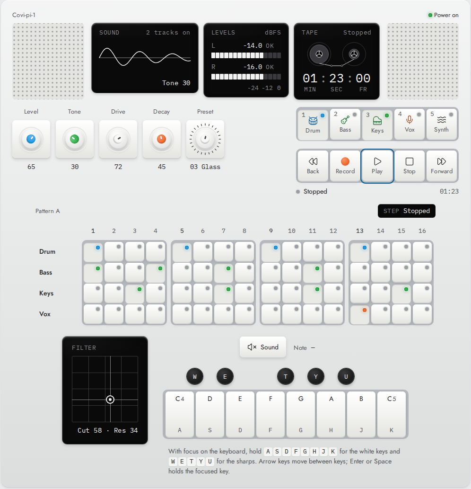
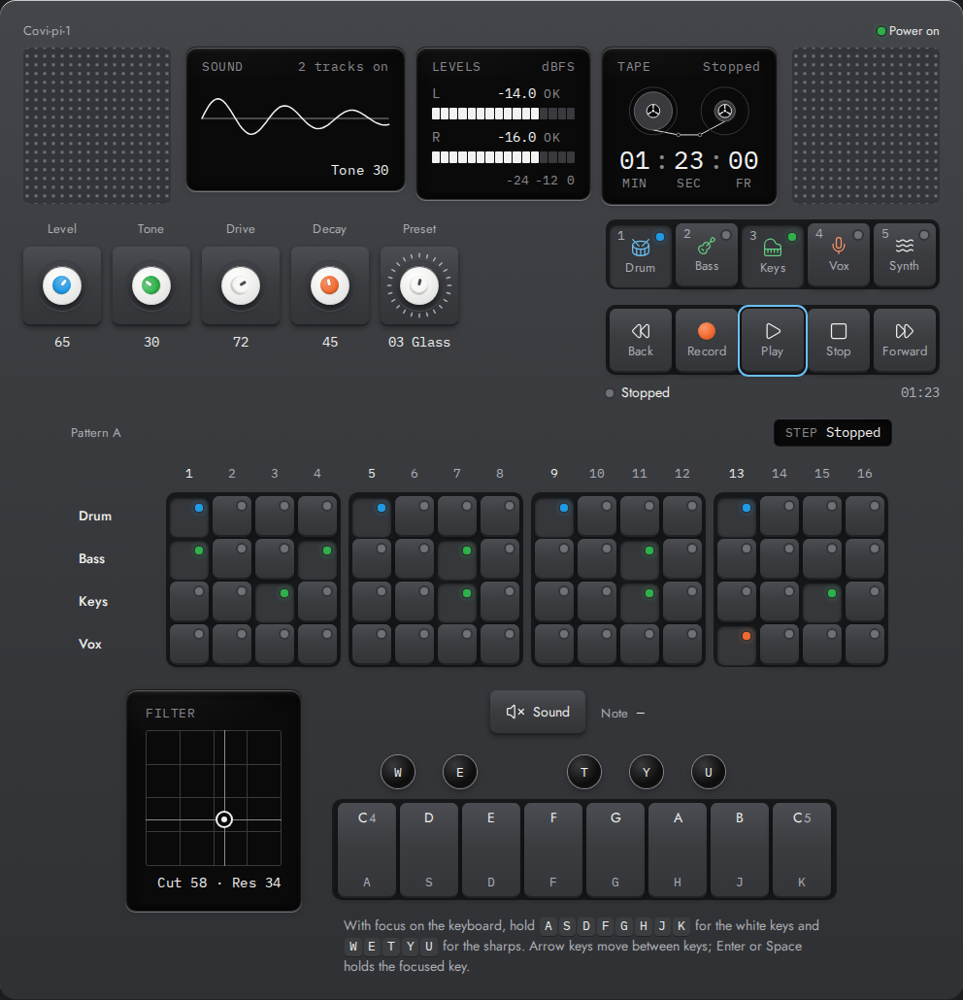
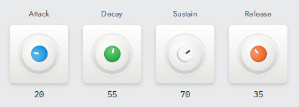
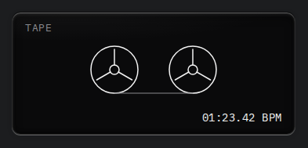
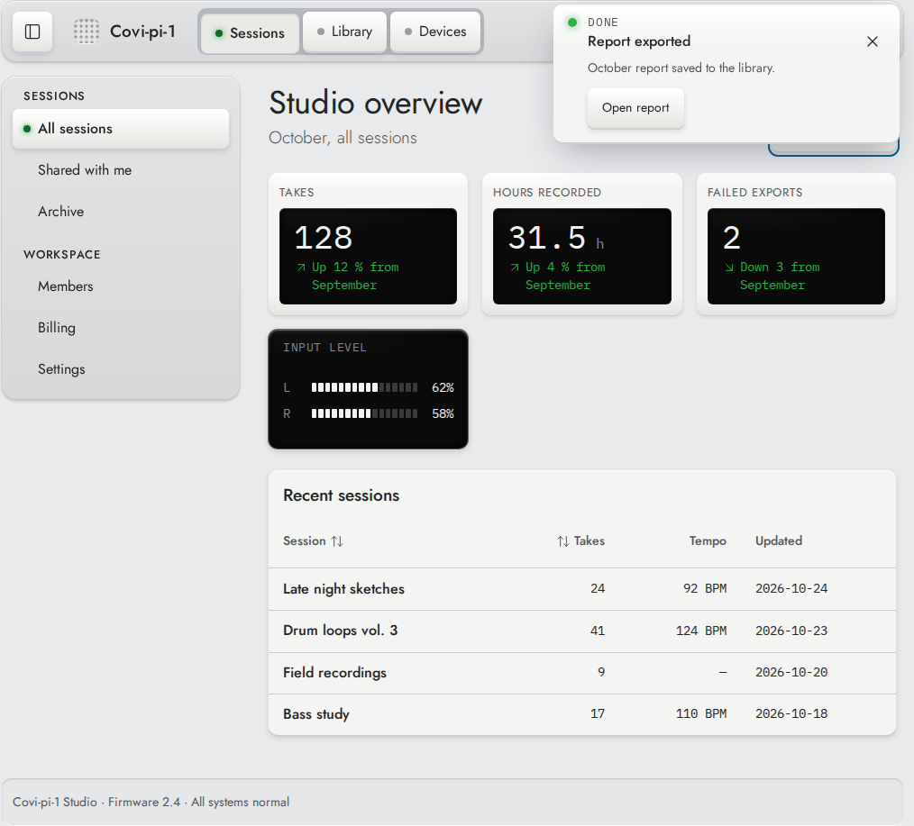
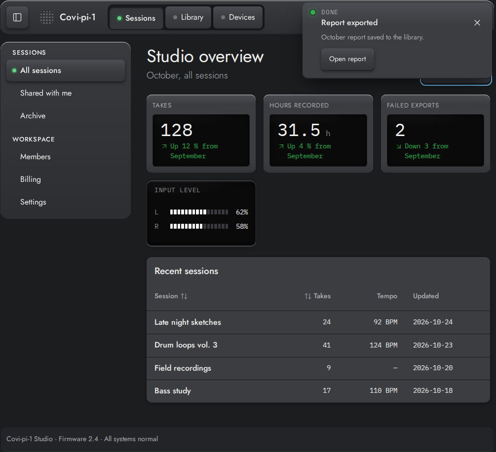
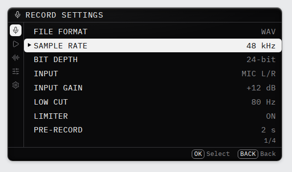
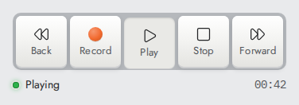

Aluminium body
Calm, light surfaces that hold everything else; Graphite in the dark theme.
Covi-pi-1 is a tactile, hardware-inspired design system for the web: an aluminium body, white key caps, coloured knobs and a black OLED read-out, as 124 Vue 3 components and CSS tokens.


124
927
2 + sys
2.2 AA
The visual language
Calm, light surfaces that hold everything else; Graphite in the dark theme.
Raised keys set into thin grooves. Pressing one feels like pressing hardware.
Blue, green, white and orange caps: the only strong colour on the page.

Black glass for numbers, meters and status, set in a mono typeface.

Speaker grilles and small "sharp" dots as quiet decoration and signals.
What's inside




Access
Access is given to a GitHub username.
Fill in the short form. It opens as a public issue on this page's repository, so don't put private details in it.
GitHub emails you an invitation to the repository and its npm package.
You can browse every component without access in the live Storybook.
Licence
Use, share and adapt Covi-pi-1, including in commercial work, as long as you give credit, link to the licence and say if you changed it. A credit line like this is enough:
"Covi-pi-1 Design" by Luis Carlos Covilla Yarce, CC BY 4.0, https://coviyarce.github.io/covi-pi-1/
The licence covers the original work only. The bundled open-source icons (Lucide, ISC) and fonts (Jost and IBM Plex Mono, SIL OFL 1.1) keep their own licences. Read the licence summary.